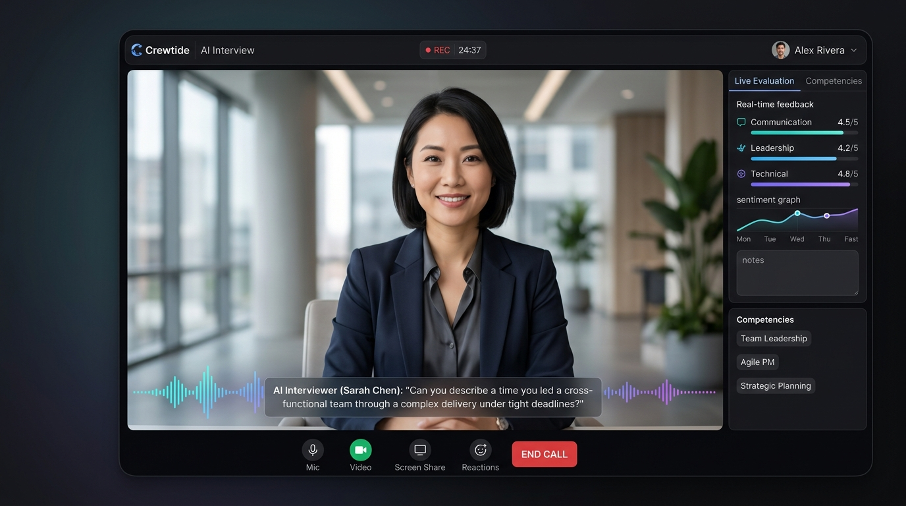
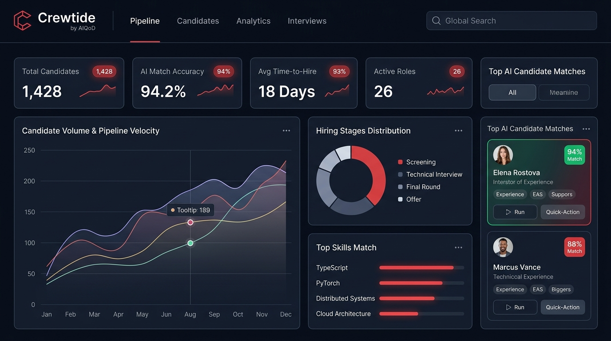

Crewtide is an AI recruiting agent for recruitment agencies and enterprise HR teams. It pulls candidates from every source, screens and ranks every resume, and runs first-round interviews with an AI avatar. Capacity grows when roles open and drops when they close.
New projects, client mandates, seasonal hiring and expansion plans land together. Candidates now apply to more roles in less time using AI, so every surge is bigger than the last. The team reading the applications stays the same size.
Recruiters are added for the peak and sit underused once it passes.
Applications pile up unread. Strong candidates accept other offers before anyone calls them.
Contract recruiters and outsourced teams take weeks to learn the roles. By the time they are productive, the surge has passed.
Crewtide takes the work that grows with volume: reading resumes, matching them to the role and running first-round interviews. When ten roles open in the same week, the agents work all ten at once. When hiring slows, nothing sits idle. Recruiters spend their time on candidate conversations, client calls and final decisions.
The role sets the brief. Candidates come in from every source, every resume is read and ranked, shortlisted candidates are interviewed by an AI avatar, and a recruiter approves who moves forward.

The first round is where recruiter hours disappear during a surge. The same opening questions get asked again and again, and every interview waits for two calendars to line up. Crewtide's AI avatar interviewer runs that round. Questions are built from the role, each answer is captured and assessed, and the result lands next to the resume score for the recruiter to review.
Candidates record answers to fixed questions. Someone still has to watch every recording.
The avatar runs the conversation and returns an assessment. The recruiter reviews results, not hours of video.
When several client mandates land in the same week, the desk does not need to grow to match. Crewtide reads, ranks and interviews for every open mandate at once, so recruiters spend their time with clients and candidates. Past candidates in the resume bank are searched first, so a good profile is not lost because it came in for a different role.
Hiring demand moves by department, by quarter and by project. Crewtide works on top of the hiring systems already in place and takes the volume work for every approved role. Approval steps sit wherever HR decides a person must sign off, and every shortlist carries the reasoning behind it.
The weights are set by your team, not by the system. Each result shows the skills that produced the score, so a shortlist can be explained candidate by candidate.
Weights are set per role, so a specialist hire and a high-volume hire are not scored on the same basis.
Try it: set the weights for a role
Weights are shown as a share of the total score.
Every score breaks down into the factors you weighted, so the ranking can be explained line by line.
Crewtide is priced on consumption. Cost follows the roles worked and the resumes processed, so a quiet month costs less than a busy one.
Resumes are pre-processed in layers before an AI model reads them. That keeps cost from rising in step with resume volume, even in the weeks when applications spike.
See pricing →Your applicant tracking system keeps storing candidates and tracking them through stages. Crewtide adds the sourcing, screening and first-round interviews on top of it. Nothing gets replaced and nothing gets migrated.
Added on top. Nothing replaced.
Alongside individual roles, the dashboard shows the shape of the whole pipeline: candidates by location, top skills across the pool, experience level distribution, recruiter shortlisting activity, job description upload trend and position-wise shortlisting.

Most screening tools decide for you what matters in a resume. The scoring model is fixed, the fields are fixed, and the reports are whatever the vendor built.
Which fields get pulled from a resume, how the weights work, what the interview asks, what the reports show and what the assistant can answer are all set to your process. When the way you hire changes, the configuration changes. It does not become a feature request sitting in someone's backlog.
LinkedIn, connected channels and bulk upload in PDF, DOCX and TXT
Existing candidate database searched alongside new applications
Every processed application in one table, independent search on each column
Job description pasted or uploaded, weighted scoring across skills, experience and education
Match percentage, years of experience, top skills, shortlist, download and email actions
First-round interviews built from the role, every answer captured and assessed
Location, skills, experience, shortlisting activity, JD upload trend, position-wise shortlisting
Plain-language questions across the candidate pool, answered as filtered lists or resume links
An AI recruiting agent does the volume work of hiring on its own: finding candidates, reading resumes, ranking them against the role and running first-round interviews. Crewtide is an AI recruiting agent built on the AIQoD platform. A recruiter reviews the results and makes every hiring decision.
An applicant tracking system stores candidates and tracks them through stages. It does not read resumes or interview anyone. Crewtide does that work and runs on top of the ATS you already use.
Yes. It works on top of your current ATS and HR systems. Candidate records, stages and tracking stay where they are. Nothing is replaced or migrated.
Shortlisted candidates are interviewed by an AI avatar. Questions are built from the job description and the weights set for the role. Every answer is captured and assessed, and the result is shown next to the resume score for the recruiter to review.
In a one-way video interview, candidates record answers and someone still has to watch every recording. The AI avatar runs the interview and returns an assessment, so recruiters review results instead of hours of video.
Yes. Agencies use it to work more client mandates with the same desk. Crewtide reads, ranks and interviews for every open mandate at once and searches the agency's existing resume bank before new sourcing starts.
Capacity scales with demand. When many roles open together, the agents work them in parallel. When hiring slows, nothing sits idle, and consumption pricing means cost follows the work done.
LinkedIn, the other channels you connect, bulk uploads in PDF, DOCX and TXT, and your existing resume database.
Against the job description, using weights your team sets per role across skills, experience and education. The skills that drove the score are shown with every result.
Yes. Crewtide prepares the shortlist and the interview assessment. A recruiter or hiring manager approves who moves forward at every stage.
On consumption. Cost follows the roles worked and resumes processed. Resumes are pre-processed in layers before an AI model reads them, so cost does not rise in step with volume.
The first configuration goes live in a day, with measurable results typically inside three to six weeks.
Bring a live role and a set of applications. Twenty minutes is enough to see Crewtide rank them and run an AI avatar interview.